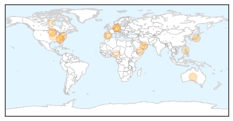

Influenza
30-Day Web Trend
0 alerts, 0 warnings

30-Day Twitter Trend
0 alerts, 0 warnings

Article Locations
Article Confidences

Top Articles:
- 0.984
- Experts predict heavy winter flu toll
- 0.979
- Melinda Moore - Profile
- 0.942
- History of epidemics informs modern science
- 0.871
- Column: Vaccinations should be a lifelong priority
- 0.868
- Unusually virulent flu strain hurts European economy
- 0.825
- Deadly bird flu strain makes first strike at a poultry farm in Mississippi Flyway
- 0.751
- March 6, 2015 Archives
- 0.751
- March 5, 2015 Archives
- 0.751
- March 5, 2015 Archives
- 0.751
- March 5, 2015 Archives
- 0.725
- DA bans poultry imports from California
- 0.638
- In big jump, H5N2 virus hits Minnesota turkey farm
- 0.603
- Avian flu in South Korea, Taiwan prompts massive culling
- 0.559
- 'Highly pathogenic' bird flu killed 15,000 Minnesota turkeys
- 0.546
- Ten Farms in Bauchi State, Nigeria, Hit by Avian Flu
- 0.516
- Bird flu devastates Minnesota turkey flock
Top Tweets:
-
No tweets found for Mar 06, 2015
Mumps
30-Day Web Trend
3 alerts, 0 warnings
30-Day Twitter Trend
0 alerts, 0 warnings

Article Locations

Article Confidences

Top Articles:
-
No articles found for Mar 06, 2015
Top Tweets:
-
No tweets found for Mar 06, 2015